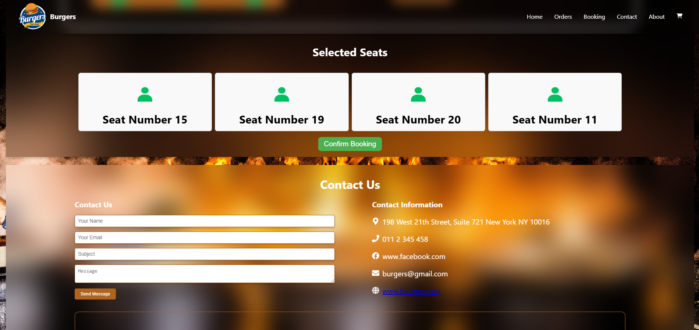
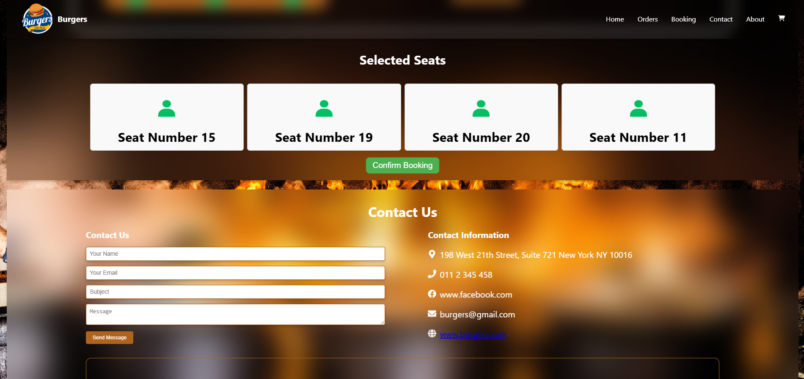

Restuarent Management System
This is a Restuarent Management System. There are food ordering facility and table booking facility
Restuarent Management System website will be built using the following technologies: Front-end: HTML, CSS, JavaScript, and a modern front-end framework like React or Angular. Back-end: A server-side programming language such as Python, Ruby, or Node.js, along with a web framework like Django, Ruby on Rails, or Express.js. Database: A relational database management system (RDBMS) like MySQL, PostgresSQL, or SQLite to store user information, job details, and recommendations. Authentication and Authorization: A secure authentication and authorization mechanism, such as JSON Web Tokens (JWT), to manage user login and access control. Version Control: Git will be used for version control and collaboration among the development team. Deployment: The website can be deployed on a cloud platform like AWS, Google Cloud, or Azure, or on a shared hosting provider.